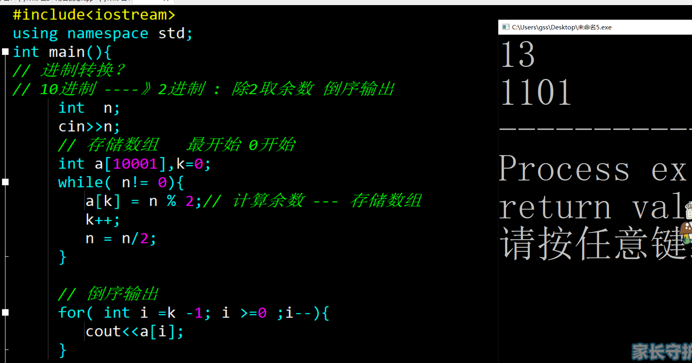
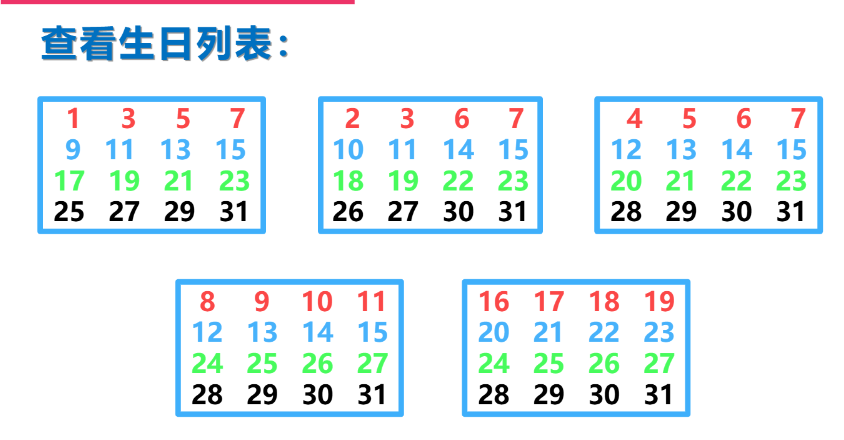
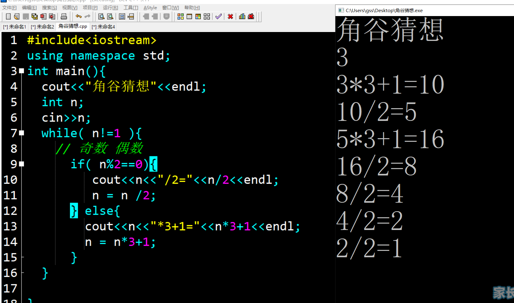
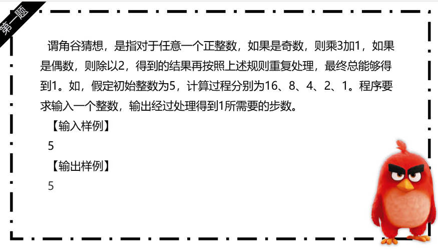
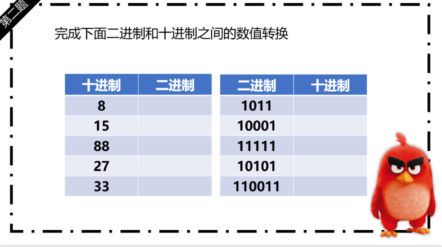
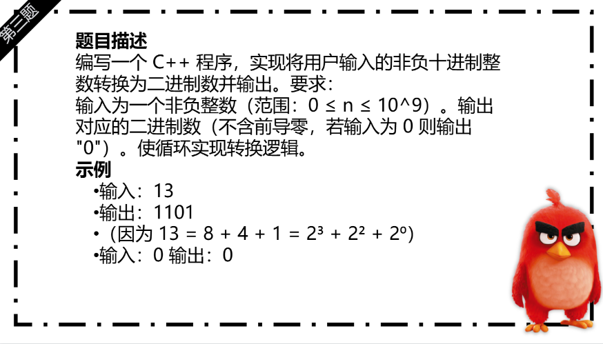

预科 43课 进制转换和角谷猜想 （while）
知识点梳理内容
-
循环的核心作用：
while 循环是一种基于条件判断的循环结构，用于重复执行一段代码，直到指定条件不满足为止 -
while循环语法：
一、基本语法
while (循环条件) {
// 循环体（要重复执行的代码）
}
执行流程：
先判断 循环条件（结果为 true 或 false）。
若条件为 true，执行循环体，执行完毕后回到步骤 1 再次判断条件。
若条件为 false，跳出循环，执行循环后的代码。
二、核心要素
循环条件：
必须是一个布尔表达式（结果为 true 或 false），或可隐式转换为布尔值的表达式（如整数：0 为 false，非 0 为 true）。
示例：i < 10、flag == true、n != 0 等。
循环体：
可以是单条语句（此时可省略 {}），也可以是多条语句（必须用 {} 包裹形成代码块）。
循环体内通常需要包含改变循环条件的语句（如自增 i++、变量赋值等），否则可能导致无限循环。
-
for循环语法：
格式：for (初始化; 循环条件; 更新条件) { 循环体; }
特点：将“初始化、判断、更新”整合在一行，适合已知循环次数的场景。 -
循环终止方式：
1. 条件不成立自动终止；
2. 使用break语句强制跳出循环（如找到目标值后停止）。
重点难点解析
- 进制的了解： 在日常生活中，我们经常会接触到不同的进制（数制）， 最常见的包括 十进制、二进制、八进制、十六进制等。
-
进制了解 ：
十进制（Decimal）
10
0, 1, 2, 3, 4, 5, 6, 7, 8, 9
日常生活中的计数、货币、时间等
二进制（Binary）
2
0, 1
计算机内部数据表示、逻辑电路
八进制（Octal）
8
0, 1, 2, 3, 4, 5, 6, 7
早期计算机系统，简化二进制表示
十六进制（Hexadecimal）
16
0-9, A(10), B(11), C(12), D(13), E(14), F(15)
计算机编程、内存地址、颜色代码等
💡 进制含义：N进制就是逢N进一，每一位上的数字乘以N的相应次方后相加得到十进制的值。 -
进制转换案例：
十进制 → 其他进制
方法：除基取余法（倒序排列）
将十进制数不断除以目标进制基数，记录每次的余数，直到商为0，然后将余数倒序排列。
示例：
（1）十进制 → 二进制
十进制数：13
13 ÷ 2 = 6 ... 1
6 ÷ 2 = 3 ... 0
3 ÷ 2 = 1 ... 1
1 ÷ 2 = 0 ... 1
倒序排列余数：1101
所以 13（十进制） = 1101（二进制）
配套练习
- 基础语法练习1 ：10进制转变2进制
- 基础语法练习2 ：神算生日测试
- 综合练习3：角谷猜想
📸 参考代码与练习说明
【题目】
题目描述
编写一个 C++ 程序，实现将用户输入的非负十进制整数转换为二进制数并输出。要求：
输入为一个非负整数（范围：0 ≤ n ≤ 10^9）。
输出对应的二进制数（不含前导零，若输入为 0 则输出 "0"）。
使用while循环实现转换逻辑。
示例
输入：13输出：1101（因为 13 = 8 + 4 + 1 = 2³ + 2² + 2⁰）
输入：0输出：0
【思路】 利用 “除 2 取余法”：将十进制数不断除以 2，记录余数（0 或 1），直到商为 0。最后将余数逆序排列，即为二进制数。
【关键代码】 循环条件为n > 0，每次循环中：
计算n除以 2 的余数（二进制的一位）。
更新n为商（n = n / 2），直到n变为 0 时退出循环。
【说明】 倒序输出

【题目】你的生日日期在下面列表中吗？ 请输入Y表示存在，N表示不存在:
【思路】 语句输出
【关键代码】增加数值
【说明】 无


【题目】
角谷猜想，是指对于任意一个正整数，如果是奇数，则乘3加1，如果是偶数，则除以2，得到的结果再按照上述规则重复处理，最终总能够得到1。如，假定初始整数为5，计算过程分别为16、8、4、2、1。程序要求输入一个整数，输出经过处理得到1所需要的步数。【输入样例】5【输出样例】5
【思路】
输入：读取一个正整数n。
初始化：设置步数 计数器steps为0。
循环处理：
当n不等于1时：
如果n是奇数，执行n = 3 * n + 1。
如果n是偶数，执行n = n / 2（使用整数除法）。
每次操作后，steps加1。
输出：当n变为1时，输出steps。
这种方法确保了我们准确地跟踪了从输入数字到1的每一步操作，并正确计算了所需的步数。
【关键代码】 无；
【说明】 无

作业练习
- 作业练习1 ：角谷猜想
- 作业练习2：进制运算
- 作业练习3：进制转换


